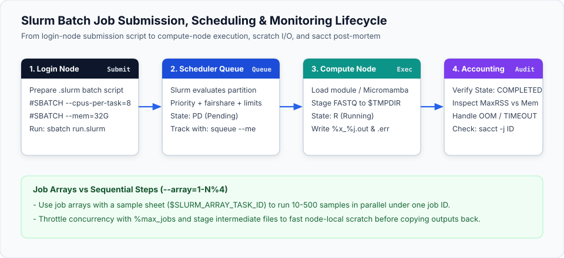
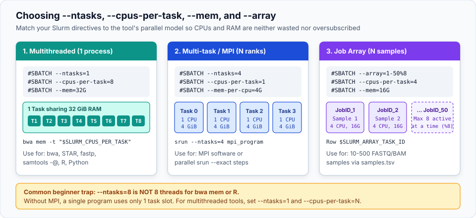

Writing Slurm Job Scripts
Nasir Mahmood Abbasi, PhD
Bioinformatics Educator

Running read alignments, quality control, or differential expression scripts directly on an HPC login node slows down shared infrastructure and gets terminated when your SSH session drops or admins enforce CPU limits. A Slurm batch script puts your resource request (CPUs, memory, walltime, and log file) and shell commands into a plain text file so the scheduler queues your job and runs it unattended on a compute node.
Format: Hands-on lab (about 25 minutes for the core submission route). Prerequisites: basic Linux shell commands and Basic Slurm Commands. Goal: write and submit a minimal smoke-test script, read its scheduler state and accounting log, and adapt templates for threaded bioinformatics tools, multi-sample job arrays, Conda/Lmod environments, and indexed genomic compression. No cluster account yet? Read through the script structure, decision table, and simulated sample-sheet check to prepare before your first login.
1. Check cluster details before submitting
Every HPC cluster enforces its own partition names, billing accounts, and storage rules. Copying another institution's #SBATCH header verbatim is the most common reason a first submission fails immediately.
- Allowed partition and account: inspect available partitions with
sinfoand check your institution's docs to see whether#SBATCH --account=...or#SBATCH --qos=...is required. - Writable working directory: submit from a project or scratch directory that compute nodes can read and write. If you send logs to a subfolder such as
--output=logs/%x-%j.out, createlogs/withmkdir -p logsbefore runningsbatch, because Slurm will not create missing parent directories for log files and the job will fail silently or cancel. - Safe first payload: test your queue path with a 1-CPU, 2-minute
hostnameanddatescript before running a multi-hour alignment or R analysis.

sacct memory and runtime verification.2. Write and read a safe smoke-test script
Before running real FASTQ or BAM files, prove that your script syntax, partition, account, and output log path work end to end. Replace YOUR_ALLOWED_PARTITION with a valid partition from sinfo (and add #SBATCH --account=YOUR_ACCOUNT only if your site requires it), then save the file as smoke-test.sbatch:
#!/bin/sh
#SBATCH --job-name=hpc-smoke
#SBATCH --ntasks=1
#SBATCH --cpus-per-task=1
#SBATCH --time=00:02:00
#SBATCH --partition=YOUR_ALLOWED_PARTITION
#SBATCH --output=hpc-smoke-%j.out
hostname
date
How a batch script is structured
Slurm parses a submission script in three distinct layers from top to bottom:
- Shebang (line 1):
#!/bin/shor#!/bin/bashtells the compute node which shell executes the commands below. Use#!/bin/bashif your script uses Bash features such as arrays,[[ ... ]], orsource .../conda.sh. #SBATCHdirectives (header): Slurm reads#SBATCHlines from the top of the file until it encounters the first non-comment, non-blank executable command. Directives placed below a command likemodule loadormkdirare ignored as plain comments. Shell variables (such as$USER) are not expanded inside#SBATCHlines; use Slurm filename tokens like%j(job ID) and%x(job name) instead. To temporarily disable a directive, add a second#so the line starts with##SBATCH:
##SBATCH --mem=2G # ignored by Slurm as an ordinary comment
- Shell setup and execution commands (body): Commands that modify the shell environment (
module load,conda activate,export,cd) must run directly in the batch shell and must not be prefixed withsrun, because ansrunstep runs in a separate sub-process whose environment changes disappear as soon as that step exits. Serial programs (such asRscript,fastp, orhostname) can run directly in the batch script, whereas MPI programs or tracked parallel steps usesrun.
To look up any directive on your cluster, check the built-in manual:
man sbatch
3. Size CPUs, memory, and walltime
Allocating 16 CPUs does not make a single-threaded script run 16 times faster; if the tool is not told to spawn 16 threads, 15 CPUs sit idle while your queue priority drops. Conversely, under-requesting memory gets your job killed by Linux cgroups with OUT_OF_MEMORY.

--ntasks=1 with --cpus-per-task=N for threaded genomics tools, --ntasks=N for MPI ranks, and --array for independent samples.| Directive | What it controls | When to choose it & bioinformatics example |
|---|---|---|
--ntasks=1 + --cpus-per-task=8 | One process allowed to use 8 CPU cores on one node | Most multithreaded tools: bwa mem -t "$SLURM_CPUS_PER_TASK", STAR --runThreadN, fastp -w, samtools sort -@, R/Python scripts |
--ntasks=4 + --cpus-per-task=1 | Four independent processes (can span nodes) | MPI-enabled tools or multiple concurrent srun --exact sub-steps |
--mem=32G | Total RAM per node (default unit is MB if suffix omitted) | Preferred for single-task multithreaded jobs (e.g., 32 GiB for human STAR alignment) |
--mem-per-cpu=4G | RAM multiplied by total allocated CPUs | Useful for MPI or variable CPU counts; mutually exclusive with --mem |
--time=02:00:00 | Maximum walltime (HH:MM:SS or D-HH:MM:SS) | Shorter accurate limits get scheduled faster via backfill; jobs running past this limit are killed (TIMEOUT) |
--output=%x-%j.out--error=%x-%j.err | Files for stdout and stderr (default combines both into slurm-%j.out) | Separating .out and .err helps isolate tool warnings from tabular stdout; omitting --error merges both into --output |
CPU threads and cluster policy: Slurm's CPU units, hardware threads (hyperthreading), and memory enforcement depend on each site's configuration. An optional --hint=nomultithread flag may alter CPU placement or be unsupported on some clusters; check local documentation before using it. Inside your script, pass ${SLURM_CPUS_PER_TASK:-1} to thread flags so the command still defaults to 1 thread if you test it directly in a shell.
Monitoring and Slurm environment variables
While a job is pending or running, inspect its queue state or live memory footprint through Slurm rather than SSHing to compute nodes (only SSH directly if your cluster explicitly permits it). For interactive debugging, request a scheduler shell with srun --pty --cpus-per-task=2 --mem=8G --time=01:00:00 bash.
squeue -j JOB_ID # queue state while pending (PD) or running (R)
sstat -j JOB_ID.batch --format=JobID,MaxRSS,AveCPU # live memory/CPU while running
sacct -j JOB_ID --format=JobID,State,Elapsed,MaxRSS,AllocCPUS # final accounting after exit
Inside a running batch script, Slurm defines each output environment variable individually; there is no general rule mapping every flag automatically:
SLURM_JOB_ID,SLURM_JOB_NAME, andSLURM_SUBMIT_DIRidentify the running job and the directory wheresbatchwas called.SLURM_NTASKSis defined when--ntasksor--ntasks-per-*is set, whereasSLURM_CPUS_PER_TASKis set only when--cpus-per-taskor--tres-per-task=cpu=#is passed.SLURM_ARRAY_TASK_IDis set for array tasks inside job arrays.SLURM_JOB_NODELISTdescribes nodes allocated to the job once scheduled.
Check the official sbatch output environment-variable list instead of guessing variable names, and reference them in shell scripts with a leading $.
4. Submit the script and capture its job ID
Always test your shell syntax first with sh -n smoke-test.sbatch (no output means valid syntax). Then submit with --parsable so sbatch prints only the numeric job ID (or ID;cluster on multi-cluster setups, which ${SUBMISSION%%;*} strips cleanly):
if SUBMISSION=$(sbatch --parsable smoke-test.sbatch); then
JOB_ID=${SUBMISSION%%;*}
printf 'Submitted job ID: %s\n' "$JOB_ID"
squeue -j "$JOB_ID"
else
echo "sbatch submission failed; inspect the partition and account error above." >&2
fi
Expected output (illustrative): if accepted, Slurm returns a job ID and shows the job in squeue as PD (pending) or R (running):
Submitted job ID: 1849203
JOBID PARTITION NAME USER ST TIME NODES NODELIST(REASON)
1849203 general hpc-smok jdoe PD 0:00 1 (Priority)
A returned job ID means Slurm accepted the script into the queue; it does not mean the job has started or succeeded. If sbatch rejects the script immediately (for example, sbatch: error: Invalid partition name specified or Invalid account or account/partition combination specified), no job ID is returned and you should fix the #SBATCH header using your site's sinfo output.
5. Inspect the log and final scheduler state
Once a job finishes, it disappears from squeue. Query sacct for the permanent accounting record (it can take a few seconds to populate after completion) and read the output file:
sacct -j "$JOB_ID" --format=JobID,State,ExitCode,Elapsed,ReqMem,MaxRSS
cat "hpc-smoke-${JOB_ID}.out"
Expected output (illustrative): notice that sacct prints a top-level allocation row (1849203) and a .batch step row (1849203.batch), where peak memory (MaxRSS) is recorded:
JobID State ExitCode Elapsed ReqMem MaxRSS
------------ ---------- -------- ---------- ---------- ----------
1849203 COMPLETED 0:0 00:00:02 500M
1849203.batch COMPLETED 0:0 00:00:02 3120K
For the smoke test, hpc-smoke-1849203.out should contain two lines: the compute node's hostname and the timestamp (for example, node042.cluster.local and Thu Nov 26 21:15:02 CET 2026). A PENDING state in squeue means waiting, not failed, and a missing log file before the job starts is normal.
Reading common Slurm failures and queue reasons
| Status / Symptom | What happened | How to fix it |
|---|---|---|
PD (Resources) or (Priority) | Waiting in queue for free nodes or fairshare turn | Wait; avoid resubmitting duplicates. Reducing oversized --time or --mem helps backfill |
PD (QOSMaxCpuPerUserLimit) or (AssocGrpMemLimit) | Request exceeds your account or QOS quota | Lower CPUs/memory or throttle array concurrency with %N |
OUT_OF_MEMORY (exit 0:125 or 137) | Process exceeded --mem cgroup limit and was SIGKILLed | Increase --mem (start at 1.5x-2x the observed MaxRSS on smaller inputs) |
TIMEOUT | Job hit the --time walltime limit | Increase --time or add threads if the tool scales cleanly |
FAILED (ExitCode 1:0 or 127:0) | Script error (127 = command not found) | Read the .out/.err log; check module load, Conda activation, or input file paths |
Optional: parallel steps, interactive shells, and job arrays
Once your single-task smoke test succeeds, use the patterns below to run independent sub-steps, test tools interactively, or scale across a cohort of samples.
Calling the same MPI executable across tasks
Here the allocation requests three 1-CPU tasks. Launching srun --ntasks=3 starts three copies of the executable simultaneously, so use this pattern only for MPI programs or tools designed for coordinated multi-rank launches (do not use it for single-process tools like bwa or Rscript, or you will run three identical copies overwriting the same output):
#!/bin/sh
#SBATCH --job-name example_script
#SBATCH --ntasks 3
#SBATCH --cpus-per-task 1
#SBATCH --mem 6G
#SBATCH --partition YOUR_ALLOWED_PARTITION
#SBATCH --output %x-%j.out
module purge
# module load REPLACE_WITH_SITE_MODULE
srun --ntasks=3 program
Running independent parallel steps in one allocation (srun --exact)
In Slurm 20.11+, a background srun step without --exact can claim all CPUs or memory of the parent allocation and block subsequent background steps until the first step finishes. Pass --exact with explicit per-step --ntasks, --cpus-per-task, and --mem so all three 1-CPU / 2-GiB steps run concurrently inside the 3-CPU / 6-GiB allocation, and wait on every PID so a silent failure in step 0 or 1 cannot be masked by step 2:
#!/bin/sh
#SBATCH --job-name example_script
#SBATCH --ntasks 3
#SBATCH --cpus-per-task 1
#SBATCH --mem 6G
#SBATCH --partition YOUR_ALLOWED_PARTITION
#SBATCH --output %x-%j.out
module purge
# module load REPLACE_WITH_SITE_MODULE
srun --exact --ntasks=1 --cpus-per-task=1 --mem=2G program0 &
step0_pid=$!
srun --exact --ntasks=1 --cpus-per-task=1 --mem=2G program1 &
step1_pid=$!
srun --exact --ntasks=1 --cpus-per-task=1 --mem=2G program2
step2_status=$?
wait "$step0_pid"
step0_status=$?
wait "$step1_pid"
step1_status=$?
if [ "$step0_status" -ne 0 ] || [ "$step1_status" -ne 0 ] || [ "$step2_status" -ne 0 ]; then
echo "At least one parallel step failed (program0=$step0_status, program1=$step1_status, program2=$step2_status)." >&2
exit 1
fi
Interactive sessions on a compute node (srun --pty)
When prototyping an R script or testing a command's peak memory, never run it on the login node. Request an interactive shell through Slurm, and type exit when done so you release the node back to the queue:
srun --pty --job-name interactive --partition YOUR_ALLOWED_PARTITION --mem 2G --cpus-per-task 1 bash
Job arrays for multi-sample bioinformatics cohorts
When processing 10 to 500 independent FASTQ, BAM, or VCF files with the same pipeline step, a Slurm job array is cleaner and safer than background subshells. Each array task receives a separate State, MaxRSS, log file, and SLURM_ARRAY_TASK_ID, and failed samples can be resubmitted individually (for example, sbatch --array=7,14 ...):
#!/bin/sh
#SBATCH --job-name example_array
#SBATCH --array=0-2%2
#SBATCH --ntasks 1
#SBATCH --cpus-per-task 1
#SBATCH --mem 2G
#SBATCH --partition YOUR_ALLOWED_PARTITION
#SBATCH --output %x-%A-%a.out
module purge
# module load REPLACE_WITH_SITE_MODULE
srun program --arg=$SLURM_ARRAY_TASK_ID
Here --array=0-2%2 runs indices 0, 1, and 2 with at most 2 tasks running concurrently (%2 protects shared filesystems from I/O storms). In log patterns, %A is the master array job ID and %a is the task index.
Bioinformatics example (sample-sheet array): for a real cohort, list one sample per row in a tab-separated samples.tsv file with a header line, use 1-based --array=1-3%2, and skip the header with NR == idx + 1 in awk so task 1 reads row 2 (the first data sample):
sample_id r1 r2
S01_CTRL fastq/S01_R1.fastq.gz fastq/S01_R2.fastq.gz
S02_TREAT fastq/S02_R1.fastq.gz fastq/S02_R2.fastq.gz
S03_TREAT fastq/S03_R1.fastq.gz fastq/S03_R2.fastq.gz
#!/bin/bash
#SBATCH --job-name=fastp-qc
#SBATCH --array=1-3%2
#SBATCH --ntasks=1
#SBATCH --cpus-per-task=4
#SBATCH --mem=8G
#SBATCH --time=00:30:00
#SBATCH --partition=YOUR_ALLOWED_PARTITION
#SBATCH --output=logs/%x-%A-%a.out
set -euo pipefail
row=$(awk -F'\t' -v idx="$SLURM_ARRAY_TASK_ID" 'NR == idx + 1 {print $1 "\t" $2 "\t" $3}' samples.tsv)
IFS=$'\t' read -r sample r1 r2 <<< "$row"
mkdir -p trimmed
fastp --thread "${SLURM_CPUS_PER_TASK:-1}" \
-i "$r1" -I "$r2" \
-o "trimmed/${sample}_R1.fastq.gz" \
-O "trimmed/${sample}_R2.fastq.gz" \
-h "trimmed/${sample}_fastp.html"
Running that exact awk lookup locally across SLURM_ARRAY_TASK_ID values 1, 2, and 3 resolves each task cleanly to its paired FASTQ paths:
Task 1 -> sample=S01_CTRL r1=fastq/S01_R1.fastq.gz r2=fastq/S01_R2.fastq.gz
Task 2 -> sample=S02_TREAT r1=fastq/S02_R1.fastq.gz r2=fastq/S02_R2.fastq.gz
Task 3 -> sample=S03_TREAT r1=fastq/S03_R1.fastq.gz r2=fastq/S03_R2.fastq.gz
Optional: running a GUI with X11
To launch graphical tools (such as IGV or an R plot window) from a compute node, add --x11 to an interactive allocation if your cluster enables X11 forwarding (and your local SSH client connected with ssh -Y or ssh -X). Many modern HPC centers provide Open OnDemand web desktops (RStudio Server, JupyterLab) instead, which are faster and more reliable over high-latency connections:
srun --pty --job-name gui --partition YOUR_ALLOWED_PARTITION --mem 2G --cpus-per-task 1 --x11 bash
Optional: custom Lmod modulefiles
When you compile a bioinformatics tool locally into your project directory, putting it directly into ~/.bashrc can break other pipelines later. On clusters using Lmod (Lua-based environment modules), write a personal modulefile such as $HOME/modulefiles/myprogram/1.0.lua so paths are loaded cleanly on demand and automatically reversed by module unload or module purge:
whatis("Name: MyProgram 1.0")
help([[This Lmod modulefile loads MyProgram version 1.0]])
prepend_path("PATH", "/path/to/myprogram/bin")
prepend_path("LD_LIBRARY_PATH", "/path/to/myprogram/lib")
Register your personal directory and load the module in interactive shells or inside batch scripts:
module use "$HOME/modulefiles"
module load myprogram/1.0
Optional: Conda and Miniforge on a cluster
Before installing your own Conda distribution on an HPC cluster, check whether the site already provides a Conda or Micromamba module and whether $HOME has strict file-count (inode) quotas. Conda environments contain tens of thousands of small files, so install them in approved project or software storage rather than filling $HOME. When self-installing, use Miniforge (or Micromamba, covered in Conda and Micromamba) so conda-forge is configured by default without Anaconda's commercial defaults channel:
curl -fsSLO https://github.com/conda-forge/miniforge/releases/latest/download/Miniforge3-Linux-x86_64.sh
bash Miniforge3-Linux-x86_64.sh
During setup, choose an approved installation prefix and answer no to editing ~/.bashrc automatically so your login shell stays clean and batch scripts explicitly activate only the environment they need.
Creating and activating project environments
Create isolated per-project environments with explicit conda-forge and bioconda channel priority rather than installing software into base:
conda create --name omics-r --override-channels -c conda-forge -c bioconda r-base r-ggplot2
Activate the environment interactively, add Bioconductor packages from the same channel hierarchy, and deactivate when finished:
conda activate omics-r
conda install --override-channels -c conda-forge -c bioconda bioconductor-deseq2
conda deactivate
Activating Conda inside a non-interactive batch script
Non-interactive batch shells do not source ~/.bashrc, so running conda activate directly fails with CommandNotFoundError: Your shell has not been properly configured to use 'conda activate'. Source conda.sh from your Miniforge prefix (or load your site Conda module) first. Note: if you enable set -u in your batch script, some older package activation scripts inside Conda environments reference unset variables, so activate the environment before turning on set -u:
#!/bin/bash
#SBATCH --job-name conda_job
#SBATCH --ntasks 1
#SBATCH --cpus-per-task 1
#SBATCH --mem 4G
#SBATCH --partition YOUR_ALLOWED_PARTITION
#SBATCH --output %x-%j.out
# Load site Conda module if applicable, or source conda.sh from your Miniforge prefix
source /path/to/your/miniforge3/etc/profile.d/conda.sh
conda activate omics-r
# Run your reviewed R analysis script; this file is a placeholder, not supplied here.
srun Rscript --vanilla my_script.R
# Deactivate environment (optional, but good practice)
conda deactivate
Optional: file compression and genomic indexing
Large sequencing intermediates waste quota fast, but choosing the wrong compression tool costs CPU hours or breaks downstream indexers. Remember two rules before compressing anything: first, raw FASTQ files from sequencers are almost always already gzipped (do not re-compress them); second, standard gzip, bzip2, and xz delete the original file unless you pass -k (keep) or redirect with -c.
| Tool | Extension | Best used for | Notes |
|---|---|---|---|
gzip / gunzip | .gz | FASTQ, general text logs, streamed tables | Fast, universal; use pigz -p "$SLURM_CPUS_PER_TASK" for parallel gzip if installed |
tar -czf / -xzf | .tar.gz | Archiving entire result folders before long-term storage | Bundles many small files into one archive (saves HPC inode quota) |
bzip2 / bunzip2 | .bz2 | Smaller text archives when speed is secondary | Tighter compression than gzip, slower |
xz / unxz | .xz | Cold archival storage of large reference text | Highest ratio, slowest CPU time and higher RAM |
bgzip + tabix | .vcf.gz + .tbi | Coordinate-sorted VCF, BED, GFF, and FASTA files | Block-compressed (BGZF) for random genomic region queries |
Common file and folder commands:
gzip -k my_file.txt # keeps my_file.txt and creates my_file.txt.gz
gunzip my_file.txt.gz # restores my_file.txt and removes .gz
tar -czvf my_directory.tar.gz my_directory/ # archive + gzip compress directory
tar -xzvf my_directory.tar.gz # extract archive
bzip2 my_file.txt && bunzip2 my_file.txt.bz2
xz my_file.txt && unxz my_file.txt.xz
Genomics critical rule: bgzip vs gzip
Although both produce a .gz extension, standard single-stream gzip cannot be seeked by genomic coordinate. Tools such as tabix and bcftools index reject plain gzip files. For sorted VCF, BED, or GFF files, compress with bgzip (part of HTSlib) and then index:
bgzip variants.vcf && tabix -p vcf variants.vcf.gz
Knowledge Check & Assessment
1. Matching tasks and CPUs
You want to run bwa mem -t 8 with 32 GiB of RAM. What happens if you write #SBATCH --ntasks=8 and omit --cpus-per-task, and what should you write instead?
Check model answer
--ntasks=8 reserves 8 separate task slots (which could even be split across nodes) while leaving SLURM_CPUS_PER_TASK unset and giving task 0 only 1 CPU. Instead, write #SBATCH --ntasks=1, #SBATCH --cpus-per-task=8, and #SBATCH --mem=32G, then invoke bwa mem -t "$SLURM_CPUS_PER_TASK" ....
2. Diagnosing pending, missing-log, and OOM jobs
Your job finished quickly with no output files, or ended overnight with OUT_OF_MEMORY. Which Slurm commands and log checks diagnose each case?
Check model answer
While queued, check NODELIST(REASON) in squeue -j JOB_ID; a missing log while PD is normal, whereas a missing log after rapid exit often means the directory in --output=logs/... did not exist beforehand. After exit, inspect sacct -j JOB_ID --format=JobID,State,ExitCode,Elapsed,ReqMem,MaxRSS and compare ReqMem against MaxRSS on the .batch row (and read the job's .out/.err log for cgroup OOM messages).
3. Safe array indexing on a sample sheet
Your samples.tsv has a header on line 1 followed by 24 samples (lines 2 to 25). Why does --array=1-24 with NR == idx fail on sample 24, and how do you fix it?
Check model answer
NR == idx sends the header line (sample_id) into task 1 and skips line 25 entirely. Use NR == idx + 1 in awk -v idx="$SLURM_ARRAY_TASK_ID" so tasks 1-24 map to lines 2-25.
Recap and next steps
- Start every new workflow or partition with a tiny smoke test, then inspect
sacct(especiallyMaxRSSon.batch) before scaling up. - Use
--ntasks=1 --cpus-per-task=N --mem=XGfor multithreaded genomics tools, and--array=1-N%Mwith a sample sheet for cohorts. - Keep environments reproducible with Lmod modules or Miniforge/Micromamba activated explicitly inside the script, and use
bgzipfor indexed genomic intervals.
Continue to HPC Troubleshooting and Support when a job fails or stalls, or scale multi-step pipelines with Reproducible Workflows: Snakemake and Nextflow.
Validation boundary: local shell-syntax checks (sh -n), mocked Slurm step/array tests, and the awk sample-sheet lookup ran locally without a live Slurm controller; scheduler outputs shown for sbatch, squeue, and sacct are illustrative examples matching official Slurm formats. Confirm local partition, account, and storage rules before submitting.
References and further reading
Use these official resources to verify current directives, environment variables, and tool behavior.
- Slurm sbatch(1) manual: directives, output tokens (
%x,%j), memory flags, and output environment variables. - Slurm srun(1) manual: parallel job steps,
--exactresource partitioning,--ptyinteractive shells, and--x11. - Slurm sacct(1) manual and sstat(1) manual: accounting states, exit codes, and
MaxRSSstep reporting. - Slurm Job Array support:
--arrayindex syntax, concurrency throttling (%N), and%A/%alog tokens. - Lmod documentation: Writing Modulefiles: Lua modulefile functions and personal
MODULEPATHmanagement. - HTSlib bgzip(1) and tabix(1) manuals: block compression and coordinate indexing for VCF/BED/GFF files.
Software and package behaviour can change. Please re-check commands against the official documentation. If a command does not work, you find an error, or the tutorial is no longer reproducible, please report it through the Contact page.
Author: Nasir Mahmood Abbasi, PhD - Category: High-Performance Computing (HPC)